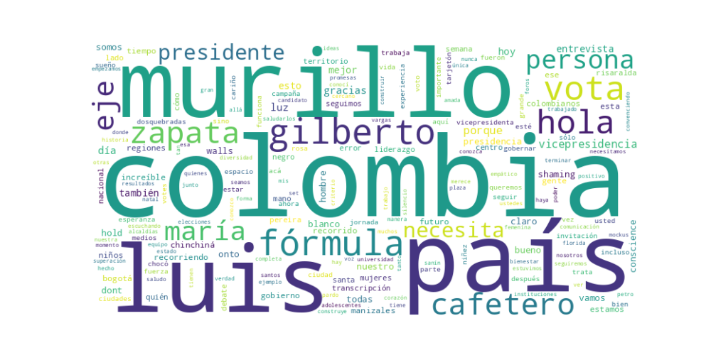

Seguidores: 10,235
1. Perfil de Comunicación: El estilo de comunicación es predominantemente informal y cercano, con un claro enfoque en la interacción directa y personal. La mayoría del corpus corresponde a narraciones en primera persona, relatos de encuentros callejeros y agradecimientos a simpatizantes, imitando el formato de historias de Instagram. Se utiliza un lenguaje popular y accesible, con expresiones coloquiales ("verracas", "¡Claro que sí!"), evitando tecnicismos. La comunicación busca proyectar autenticidad y una conexión emocional, más que un discurso político formal o técnico.
2. Temas Principales: 1. La Fórmula y la Experiencia: El tema central es la presentación del binomio presidencial ("#murillozapata") como la opción más capacitada. Se enfatiza la experiencia de Murillo (exgobernador, exministro, excanciller) y de Zapata en la vicepresidencia, contrastándola con la de otros candidatos. * Ejemplo: "Colombia no necesita promesas sobre quién puede gobernar, sino experiencias que lo demuestren". 2. Inclusión y Visibilidad: Hay una insistencia constante en la necesidad de ser incluidos en debates y medios de comunicación, argumentando que los criterios de encuestas o consultas son excluyentes. * Ejemplo: "Pero necesitamos estar en todos los debates, foros... para que la gente nos conozca. Los criterios no pueden ser simplemente que tienen que ir encabezando las encuestas". 3. Colombia desde las Regiones: Se promueve una visión descentralizada del país, presentando a los candidatos como representantes de los territorios (Chocó, Eje Cafetero) y no solo de Bogotá. * Ejemplo: "Colombia no se entiende sólo desde Bogotá, sino que se construye desde sus regiones... somos la fórmula de los territorios". 4. Liderazgo Positivo y Esperanza: Se enmarca la candidatura en valores como optimismo, futuro y superación, vinculados a la historia personal de Murillo. * Ejemplo: "Vota superación, vota esperanza, vota futuro, vota liderazgo positivo".
3. Tono y Sentimiento Dominante: El tono general es propositivo y esperanzador, con una base de reivindicación. Si bien existe una crítica implícita al establishment político que los excluye ("los criterios no pueden ser simplemente..."), el enfoque no es confrontacional sino de auto-afirmación. Predomina un sentimiento de convicción en el proyecto y gratitud hacia los seguidores, buscando inspirar confianza a través de la narrativa de esfuerzo y recorrido nacional.
4. Palabras Clave de Poder: * #murillozapata (hashtag unificador y eslogan principal). * Experiencia / Preparado (atributo central diferenciador). * Territorios / Regiones (eje identitario y programático). * Inclusión / Diversidad (valor social y queja por exclusión mediática). * Futuro / Esperanza / Superación (promesa emocional). * "No votes en blanco. Vota Negro" (consigna de voto útil y que juega con el apellido del candidato).
5. Conclusión Estratégica: La estrategia de comunicación busca posicionar una candidatura de bajo perfil inicial como una opción seria y válida, apelando a un electorado que valore la experiencia técnica y la gestión por encima de la polarización ideológica. El discurso está dirigido a un público que pueda sentirse excluido por las dinámicas tradicionales de encuestas y coaliciones mayoritarias, ofreciéndoles una alternativa concreta ("la fórmula") y un voto útil ("no votes en blanco"). Busca evocar confianza por capacidad, identificación por lo regional y esperanza por un liderazgo positivo, construyendo una narrativa de legitimidad desde la calle y la constancia, más que desde los escenarios tradicionales del poder central.
REPORTE ESTRATÉGICO: ANÁLISIS DEL CORPUS DE ÉXITO Candidata: Luz María Zapata, fórmula vicepresidencial con Luis Gilberto Murillo.
El éxito de la comunicación se basa en una fórmula dual de cercanía experiencial y narrativa de contraste. Los videos más efectivos combinan una presentación personal, cálida y enraizada en los territorios con un discurso que confronta directamente la política tradicional bogotana y abstracta. No se venden promesas, sino una experiencia verificable y una identidad ("la fórmula de las regiones") como antídoto contra el establishment. La emoción predominante es una esperanza práctica, construida sobre la competencia y el trabajo callado, no sobre utopías.
Se dirige a una audiencia regional, desencantada y que valora la autenticidad. * Votantes regionales frustrados: Personas fuera de Bogotá que se sienten ignoradas por el centro del poder. * Indecisos y desencantados del sistema: El mensaje antidiscurso y pro-hecho busca capturar a quienes consideran el voto en blanco o están hartos de la política tradicional. * Base que valora el trabajo sobre la retórica: Atrae a quienes admiran un liderazgo percibido como técnico, humilde y perseverante, más que carismático o grandilocuente. * Potencialmente, mujeres y comunidades étnicas: El llamado a la "fuerza femenina" y la explícita representación afrodescendiente ("vota negro") buscan resonar con estos grupos identitarios.
La clave fundamental del poder de su discurso es la conversión de una supuesta desventaja (ser "de las regiones", fuera del círculo bogotano) en su principal activo de autenticidad y credibilidad. Lo hace potente porque: 1. Es un relato de legitimidad inversa: La autoridad no viene del centro, sino de la periferia. Su experiencia en territorios es presentada como más válida y comprensiva de Colombia que la de un político tradicional bogotano. 2. Ofrece certeza en un entorno de desconfianza: Frente al escepticismo generalizado, no vende un sueño lejano, sino una competencia demostrable. El mensaje es: "No te prometo maravillas; te ofrezco a alguien que ya sabe cómo hacer el trabajo y que viene de donde tú vienes". 3. Transcende la dicotomía izquierda-derecha: Al declarar que "esto no trata de derecha, izquierda, centro. Se trata de Colombia", busca unificar a un electorado cansado de la polarización tradicional bajo una nueva bandera: la eficacia territorial versus el centralismo estéril.
En esencia, su diferencial no es ideológico, sino geográfico y moral: la honestidad del trabajo regional frente a la vaciedad del discurso central. Su fuerza reside en presentarse no como la opción política más brillante, sino como la más real y confiable.

Caption: Colombia no se entiende sólo desde Bogotá, sino que se construye desde sus regiones. He trabajado con todas las alcaldías del país y por eso sé qué funciona y qué no. Junto a @luisgmurillou , construiremos un gobierno que nace desde y para los territorios. La fórmula #MurilloZapata es la que el país necesita.
Likes: 956 | Comentarios: 35 | Reproducciones: 4,347
Ver en InstagramCaption: Colombia no necesita promesas sobre quién puede gobernar, sino experiencias que lo demuestren. Conozco bien la vicepresidencia y cómo transformar las ideas en acciones. Por eso, #murillozapata es la mejor fórmula para el país. @luisgmurillou @luzmazapata_
Likes: 997 | Comentarios: 59 | Reproducciones: 6,217
Ver en InstagramCaption: Hoy desde mi ciudad natal, mi amada Pereira, convenciendo a más colombianos y colombianas de que Luis Gilberto Murillo es el presidente que merece y necesita el país. ¡Seguiremos recorriendo más ciudades para que cada vez seamos más respaldando la fórmula #murillozapata! @luisgmurillou @luzmazapata_
Likes: 245 | Comentarios: 2 | Reproducciones: 1,589
Ver en Instagram